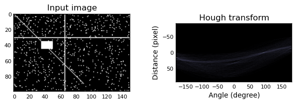

Module: transform.hough_transform¶
zip¶
- skimage.transform.hough_transform.zip¶
alias of izip
| skimage.transform.hough_transform.hough(img) | Perform a straight line Hough transform. |
| skimage.transform.hough_transform.probabilistic_hough(img) | Return lines from a progressive probabilistic line Hough transform. |
hough¶
- skimage.transform.hough_transform.hough(img, theta=None)¶
Perform a straight line Hough transform.
Parameters : img : (M, N) ndarray
Input image with nonzero values representing edges.
theta : 1D ndarray of double
Angles at which to compute the transform, in radians. Defaults to -pi/2 .. pi/2
Returns : H : 2-D ndarray of uint64
Hough transform accumulator.
distances : ndarray
Distance values.
theta : ndarray
Angles at which the transform was computed.
Examples
Generate a test image:
>>> img = np.zeros((100, 150), dtype=bool) >>> img[30, :] = 1 >>> img[:, 65] = 1 >>> img[35:45, 35:50] = 1 >>> for i in range(90): ... img[i, i] = 1 >>> img += np.random.random(img.shape) > 0.95
Apply the Hough transform:
>>> out, angles, d = hough(img)
import numpy as np import matplotlib.pyplot as plt from skimage.transform import hough img = np.zeros((100, 150), dtype=bool) img[30, :] = 1 img[:, 65] = 1 img[35:45, 35:50] = 1 for i in range(90): img[i, i] = 1 img += np.random.random(img.shape) > 0.95 out, angles, d = hough(img) plt.subplot(1, 2, 1) plt.imshow(img, cmap=plt.cm.gray) plt.title('Input image') plt.subplot(1, 2, 2) plt.imshow(out, cmap=plt.cm.bone, extent=(d[0], d[-1], np.rad2deg(angles[0]), np.rad2deg(angles[-1]))) plt.title('Hough transform') plt.xlabel('Angle (degree)') plt.ylabel('Distance (pixel)') plt.subplots_adjust(wspace=0.4) plt.show()
(Source code, png)

{kind=link}
probabilistic_hough¶
- skimage.transform.hough_transform.probabilistic_hough(img, threshold=10, line_length=50, line_gap=10, theta=None)¶
Return lines from a progressive probabilistic line Hough transform.
Parameters : img : (M, N) ndarray
Input image with nonzero values representing edges.
threshold : int
Threshold
line_length : int, optional (default 50)
Minimum accepted length of detected lines. Increase the parameter to extract longer lines.
line_gap : int, optional, (default 10)
Maximum gap between pixels to still form a line. Increase the parameter to merge broken lines more aggresively.
theta : 1D ndarray, dtype=double, optional, default (-pi/2 .. pi/2)
Angles at which to compute the transform, in radians.
Returns : lines : list
List of lines identified, lines in format ((x0, y0), (x1, y0)), indicating line start and end.
References
[R158] C. Galamhos, J. Matas and J. Kittler, “Progressive probabilistic Hough transform for line detection”, in IEEE Computer Society Conference on Computer Vision and Pattern Recognition, 1999.